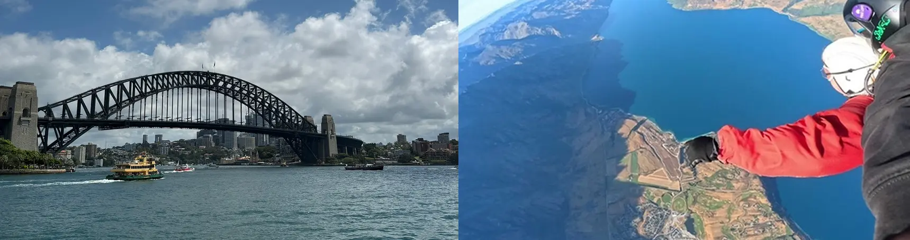
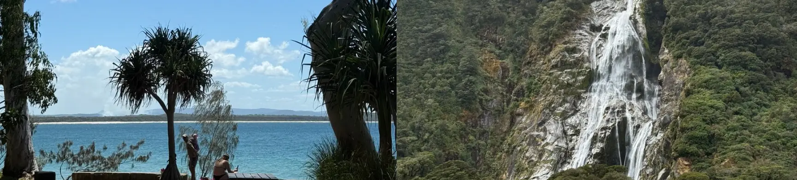

Australien og New Zealand
Going down under
Oplev Australiens ikoniske strande, unikke dyreliv og pulserende storbyer eller udforsk New Zealands dramatiske landskaber, hyggelige byer og fantastiske outdooroplevelser.

Must see i Australien og NZ
Australien highlights⬇️
- Great Barrier Reef
- Uluru
- Great Ocean Road
- Sydney Opera House & Harbour Bridge
- Byron Bay
Snorkling og dykning blandt koraller og marineliv.
Det ikoniske røde landskab midt i Australiens outback.
En af Australiens kendte roadtrip-ruter langs kysten.
To af Sydneys mest ikoniske seværdigheder.
Få den ægte surfer by oplevelse
New Zealand highligts⬇️
- Milford Sound
- Queenstown
- Rotorua
- Hobbiton
- Kaikoora
Dramatiske bjerge, fjorde og vandfald.
Adventure, natur og outdooraktiviteter.
Geotermisk aktivitet og Māori-kultur.
Film-location fra The Lord of the Rings og The Hobbit.
Kom helt tæt på livet under vand
Hvornår er det bedst at rejse til Australien?
Hvis du vil opleve Australien, bør du have in mente, at landet har et meget varieret klima afhængigt af, hvornår og hvor du rejser da det er et kæmpe land. Australien har fire årstider, hver med sin egen charme.
🌺Forår (september – november): Foråret er en af de bedste tider at besøge Australien. Temperaturen er mild og behagelig – perfekt til at udforske nationalparker!
🏄Sommer (december-februar): Den australske sommer falder sammen med vores vinter, og disse måneder er perfekte til strandture, snorkling ved Great Barrier Reef og festivaler. Det er den mest populære tid at rejse til Australien!
🍂Efterår (marts – maj): Efteråret byder på køligere temperaturer, hvilket gør det til et godt tidspunkt for sightseeing i byer som Sydney og Melbourne. Det er også en oplagt sæson til at nyde vinoplevelser!
❄️Vinter (juni-august): Vinteren i Australien er mild sammenlignet med mange andre steder, hvilket gør det til et godt tidspunkt at besøge Cairns og Darwin. De sydlige regioner som Victoria og New South Wales byder desuden på fremragende skiløb i alpeområderne!
Hvornår er det bedst at rejse i New Zealand?
New Zealand har et tempereret klima, men vejret kan variere meget afhængigt af, hvor du befinder dig i landet. Landet ligger på den sydlige halvkugle, hvilket betyder, at årstiderne er omvendte af dem i Europa.
☀️️Sommer (december – februar): Dette er højsæsonen med varme temperaturer (20-30°C), perfekt til strande, vandreture og udendørs eventyr. Dog er det også den travleste tid med højere priser og flere turister.
🍁Efterår (marts – maj): Stadig behagelige temperaturer (15-25°C) og færre turister. Naturen er smuk med gyldne efterårsfarver, især i vinområder som Central Otago.
🏂Vinter (juni – august): Perfekt til skientusiaster, da bjergene på både Nord- og Sydøen får sne. Byer som Queenstown og Wanaka bliver populære skisportsdestinationer. I lavlandet er vejret mildt, men regnfuldt nogle steder.
🌷Forår (september – november): Naturen blomstrer, og temperaturerne (15-20°C) begynder at stige igen. Dette er en fantastisk tid til vandreture og udendørs aktiviteter uden de store turistmængder.
🚐 Sådan kommer du rundt
Australien:
🚌Bus: En god måde at rejse rundt i Australien på er med et buspas. Et buspas i Australien giver dig mulighed for at hoppe af og på, dér hvor du har lyst, og giver dig dermed maksimal fleksibilitet for få penge.
🚗Autocamper: Nogle kalder det kør selv ferie, vi foretrækker road trip. Med en campervan eller autocamper i Australien har du dit hjem med på farten. Så kan du sove og lave mad i bilen, mens du nyder friheden og Australiens storslåede natur. En ferie i autocamper er den ultimative måde at rejse i Australien på, og du kan køre lige nøjagtig derhen du vil når du vil. Et oplagt road trip er langs Australiens østkyst eller langs Great Ocean Road fra Melbourne til Adelaide i South Australia. Det er den perfekte måde at opleve Australien. Der findes masser af forskellige modeller, og du kan vælge den, der passer bedst til dit behov.
New Zealand:
🚗Autocamper: Den mest oplagte måde at rejse rundt i New Zealand på, er at leje en autocamper. Vi går utrolig meget ind for slow travel, autentiske oplevelser og at udforske landet på egen hånd.
🚌Bus: En anden mulighed er at købe et buspas. På denne måde kommer du rundt i hele landet, og er den perfekte måde at møde andre rejsende, der også skal rundt i New Zealand og så stopper busserne ved alle de store highlights.
Har du planer om at rejse down under?
Kontakt os og fortæl lidt om dine rejseplaner – så tager vi den derfra! Uanset om du drømmer om en rejse til Australien, New Zealand eller en kombination af begge, hjælper vi dig med at finde de bedste muligheder. Vi tilbyder blandt andet pakkerejser med fly og overnatning samt Working Holiday, og vi deler gerne vores personlige tips og erfaringer fra vores egne rejser.
Oplev Australiens imponerende natur og historie, udforsk Western Australia eller South Australia, og kom helt tæt på det unikke dyreliv – måske med kænguruer i en nationalpark på Kangaroo Island. I New Zealand kan du opleve den frodige natur og besøge steder som Abel Tasman National Park, Queen Charlotte Sound, Tongariro National Park og Bay of Islands.
Skriv kort om dine rejseplaner – din cirka budgetramme, hvor mange I rejser sammen, og hvornår du gerne vil afsted. Så undersøger vi mulighederne og hjælper dig med at sammensætte en rejse, der passer til jer.